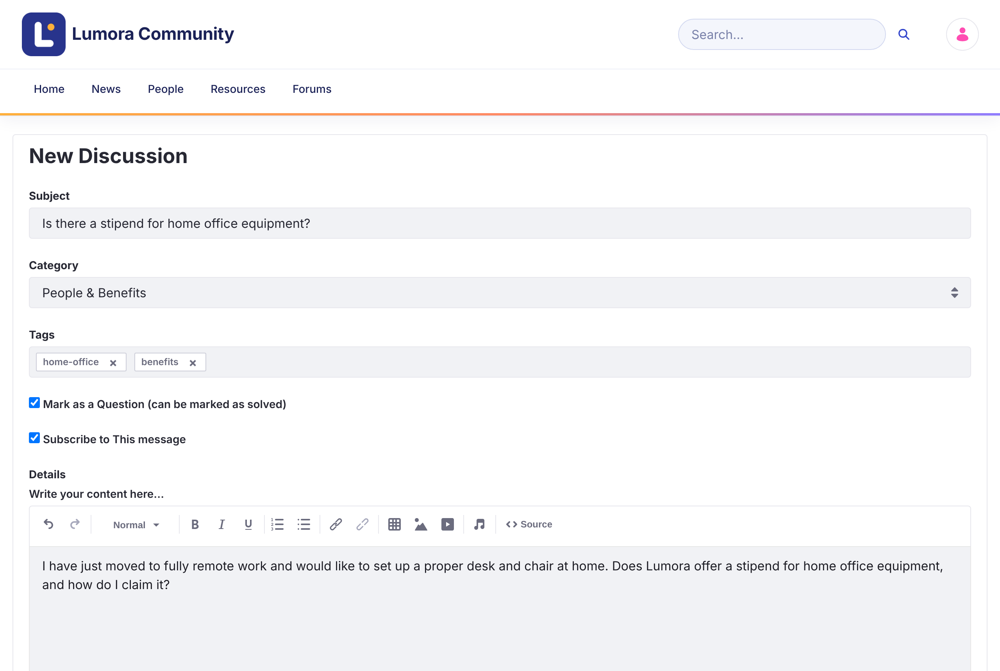

このページは英語版を翻訳したものです。UI のラベルとメニュー名は英語で表記しています。内容が異なる場合は、英語版が優先されます。
ディスカッションの開始
トピックは、1 つのカテゴリーで会話を始めるものです。オープンなディスカッションとして、または質問として投稿できます。
ディスカッションを開始するには、サインインしている必要があります。禁止されたメンバーは投稿できません。
-
ホームページ、またはディスカッションの一覧の上にある New Discussion をクリックします。
-
トピックの内容がわかる Subject を入力します。
-
Category を選択します。
-
必要に応じて、他の人がトピックを見つけやすいように Tags を追加します。
-
助けを求める場合は、Mark as a Question (can be marked as solved) をチェックしたままにします。オープンなディスカッションにする場合はチェックを外します。これは後から変更できます。
-
返信の通知を受け取るには、Subscribe to This message をチェックしたままにします。
-
Details にトピックを書きます。テキストの書式設定、リンク、表、画像、動画の追加、他のメンバーへのメンションができます。
-
必要に応じて、Attach Files をクリックします。各ファイルは最大 10 MB までです。
-
Post をクリックします。

投稿すると、トピックが開きます。
モデレーターには Priority フィールド（Announcement、Sticky、Urgent）も表示されます。優先度によるトピックの固定を参照してください。
トピックを編集または削除する
トピックの Options メニュー（⋮）を開き、Edit Topic または Delete Topic をクリックします。同じメニューの Convert to Question と Convert to Discussion で、2 種類のトピックを切り替えられます。
質問をディスカッションに変換すると、承認された回答が削除されます。